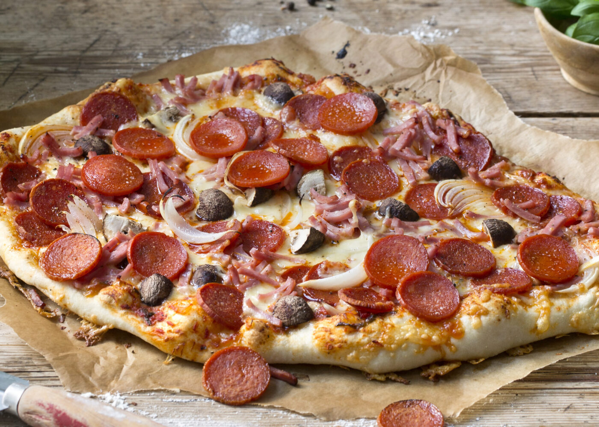

Pizza

Description
This Pizza is made by Italis most famous chef and brings out the best of all the Pizzas
Ingredients
- 1 teaspoon sugar
- 15 ounces ricotta cheese
- 1 1/2 pounds (24 ounces) mozzarella cheese, grated or sliced
Steps
- “Bloom” the yeast by sprinkling the sugar and yeast in the warm water. Let sit for 10 minutes, until bubbles form on the surface.
- In a large bowl, combine the flour and salt. Make a well in the middle and add the olive oil and bloomed yeast mixture. Using a spoon, mix until a shaggy dough begins to form.
- Slide the pizza onto the preheated pizza stone or pan. Bake for 15 minutes, or until the crust and cheese are golden brown.